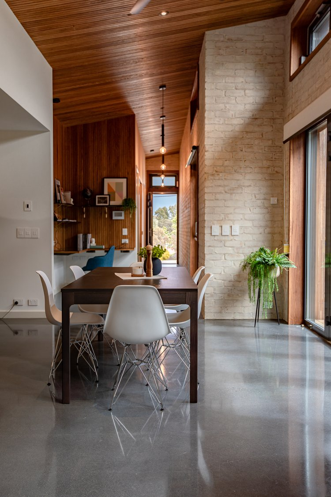

EER Report ACT / BASIX Report NSW- Professional Energy Assessment Services
Expert EER report services in Canberra and across Australia, along with NSW BASIX reports for residential properties

Our Services
Comprehensive energy assessment solutions for your property
EER Report Canberra - Energy Efficiency Ratings
Professional EER report services in Canberra and across Australia. Expert energy efficiency assessments to help you understand your property's energy performance and identify opportunities for improvement, fully compliant with NatHERS standards.
- Comprehensive energy analysis
- Detailed efficiency recommendations
- Compliance with Australian standards
- Professional certification
BASIX Reports NSW
Professional BASIX report services delivered exclusively for New South Wales projects. Building Sustainability Index reports ensuring your new home or renovation meets NSW sustainability requirements and regulatory compliance.
- Thermal comfort assessment
- Water efficiency analysis
- Energy consumption modelling
- Regulatory compliance verification
Consultation Services
Expert guidance on energy efficiency improvements and sustainable building practices for homeowners and builders.
- Pre-construction planning
- Renovation guidance
- Energy-saving strategies
- Ongoing support
Why Choose Our EER Report Services in Canberra?
Professional Energy Efficiency Rating (EER) reports for Canberra properties with NatHERS accredited expertise
EER Report Canberra - What You Need to Know
An EER report (Energy Efficiency Rating) is essential for many property transactions and developments in Canberra. Our NatHERS accredited assessors provide comprehensive EER reports that meet all Australian building standards and regulatory requirements.
EER Report Benefits in Canberra:
- Property Sales: EER reports may be required when selling your Canberra property
- New Developments: Energy efficiency ratings essential for new builds and major renovations
- Government Compliance: Meet ACT building requirements with professional EER assessment
- Energy Savings: Identify opportunities to reduce energy costs and improve comfort
- Market Value: Higher energy ratings can increase your property's market appeal
Our EER Report Process in Canberra
1. Consultation
Discuss your EER report requirements and property specifications
2. Site Assessment
Professional on-site inspection and detailed measurements
3. Analysis
NatHERS software analysis and comprehensive EER report preparation
4. Delivery
Fast delivery of your certified EER report for Canberra compliance
Our Strategic Partnership
Working with Australia's leading design professionals
Jast Design - Our Premier Partner
We are proud to partner with Jast Design, Australia's leading architectural and design consultancy. This strategic partnership allows us to provide comprehensive energy assessment services alongside world-class design solutions.
EER Report Process in Canberra
Professional EER report services in Canberra - simple, transparent, and reliable energy assessment delivery
EER Report Consultation
We discuss your EER report requirements in Canberra and provide a detailed quote based on your property specifications and energy assessment needs.
Site Visit
Our certified assessors conduct a thorough on-site inspection, taking detailed measurements and photographs.
EER Report Analysis
We analyse the data using industry-standard NatHERS software and prepare your comprehensive EER report for Canberra compliance.
EER Report Delivery
Your EER report is delivered within the agreed timeframe, with ongoing support for any questions or clarifications about your Canberra energy assessment.
EER Report Compliance in Canberra
Understanding your EER report obligations in Canberra and our NatHERS accredited expertise
EER Report Requirements for Canberra Homeowners
- EER reports may be required for property sales in Canberra
- Energy efficiency ratings essential for new builds and major renovations
- Understanding your property's energy performance with professional EER assessment
- Access to government rebates and incentives with valid EER report
For Builders
- BASIX certification required before NSW construction begins
- Compliance with Building Code of Australia
- Energy efficiency requirements for new developments
- Professional documentation for council approvals
Standards & Certifications
Frequently Asked Questions
Answers to common questions about EER and BASIX reports
What is an EER report and do I need one in Canberra?
What is a BASIX report and where is it required?
How long does it take to get an EER report?
What is NatHERS accreditation?
How much does an EER or BASIX report cost?
What is the minimum star rating required for a new home in the ACT?
Do I need an EER report to sell my house in Canberra?
What is the difference between an EER report and a BASIX report?
Can I improve my home's EER star rating?
What documents do I need to provide for an EER or BASIX assessment?
Does Blast Energy service areas outside Canberra?
What happens if my property does not meet the minimum EER star rating?
Contact Us
Get in touch for a quote or to discuss your energy assessment needs
Get In Touch
Ready to start your energy assessment? Contact us today for a free quote and consultation.